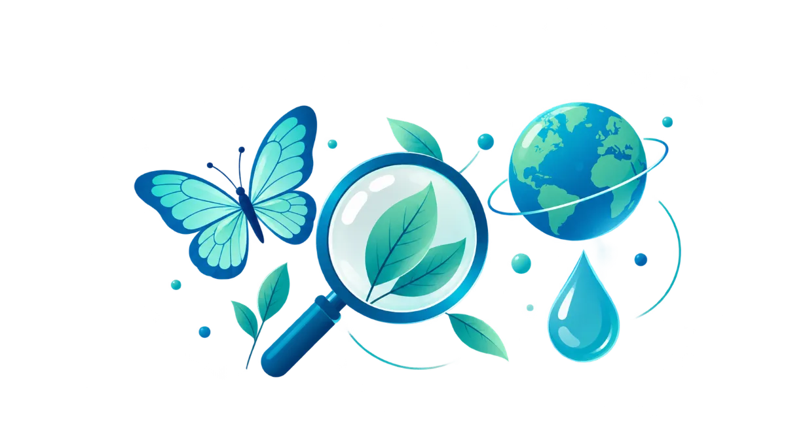

General Science
Build understanding. Discover science. Grow confidence.
Science helps students understand the world around them—from living things and materials to forces, energy and the environment.
Our General Science programme supports the science content relevant to each student’s school year and applicable curriculum. Clear explanations, guided practice and scientific questions help students connect ideas, apply their knowledge and grow in confidence.
What students will develop
- Scientific knowledge: Understand year-level concepts across Biology, Chemistry, Physics and other areas of science.
- Scientific vocabulary: Communicate ideas clearly using appropriate terminology.
- Inquiry and investigation: Ask questions, make predictions, examine evidence and draw conclusions.
- Data interpretation: Read graphs, tables, diagrams and scientific information.
- Problem-solving and reasoning: Apply knowledge to questions and situations.
- Learning confidence: Build foundations for continued science learning.
Content and depth are guided by the student’s year level, school curriculum and learning needs.
How our lessons work
- Understand the concept
Explore topics through clear explanations and relevant examples.
- Connect ideas to the real world
Relate science to everyday situations and natural phenomena.
- Develop scientific thinking
Ask questions, interpret information and use evidence to explain ideas.
- Practise and apply
Reinforce understanding through questions, worksheets, diagrams and activities.
- Review and strengthen
Revisit important concepts and give challenging areas further attention.
Lessons are adapted to school topics and the student’s level of understanding.
Learning resources and support
Learning materials and practice activities help students reinforce concepts beyond the lesson. Depending on class arrangements, support may include:
- Learning materials: Notes and resources for school science topics.
- Worksheets and practice questions: Activities to reinforce concepts and apply knowledge.
- Homework and revision: Opportunities to revisit ideas and strengthen understanding.
- Google Classroom: Access to organised learning resources where used for the class.
- Class recordings: Access to recordings where available.
Our aim is to complement school learning while encouraging curiosity, independent thinking and a positive approach to science.
Learning that suits your child
SciMind Education offers online and face-to-face learning options, subject to class availability and arrangements.
We can discuss your child’s year level, current school science topics and learning goals to help identify a suitable class option.
Help your child build a stronger foundation in science.
Enquire about General Science for Years 4–7 to discuss your child’s learning needs and suitable class arrangements.
Enquire About General Science